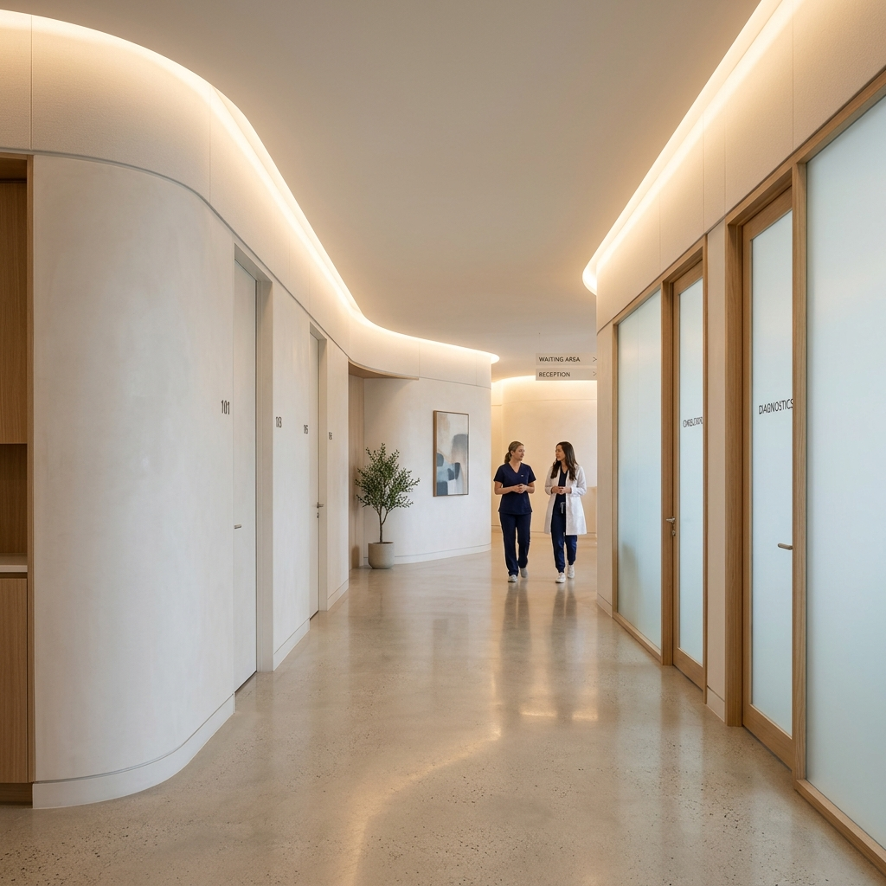
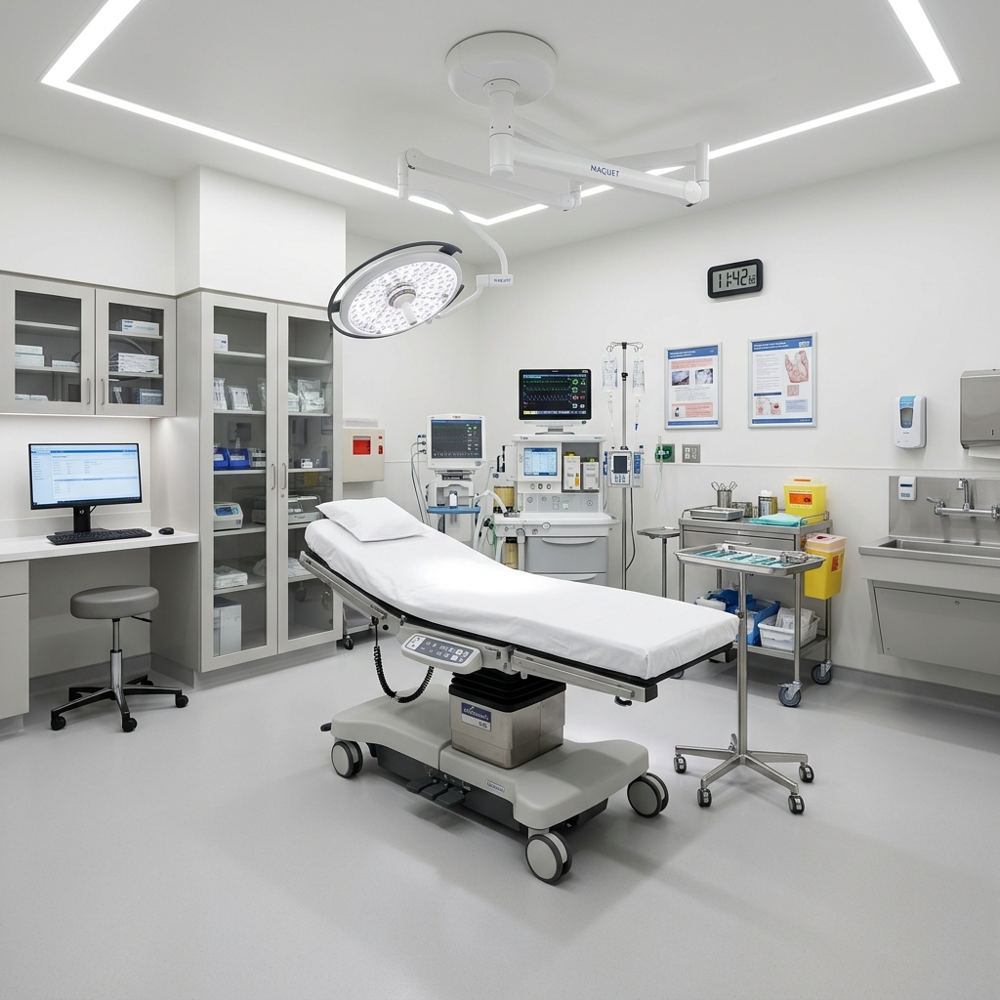
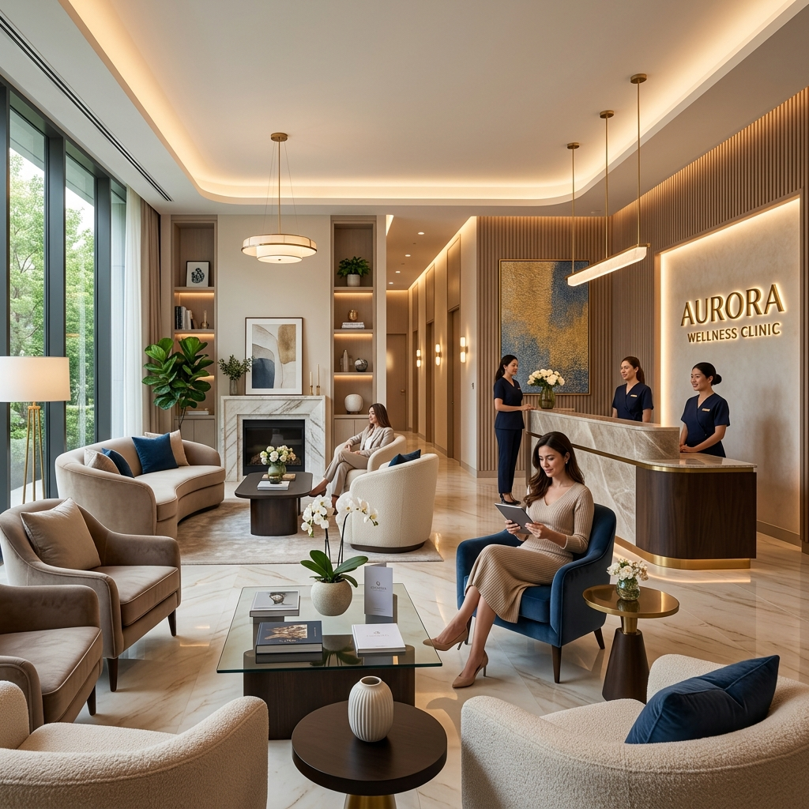
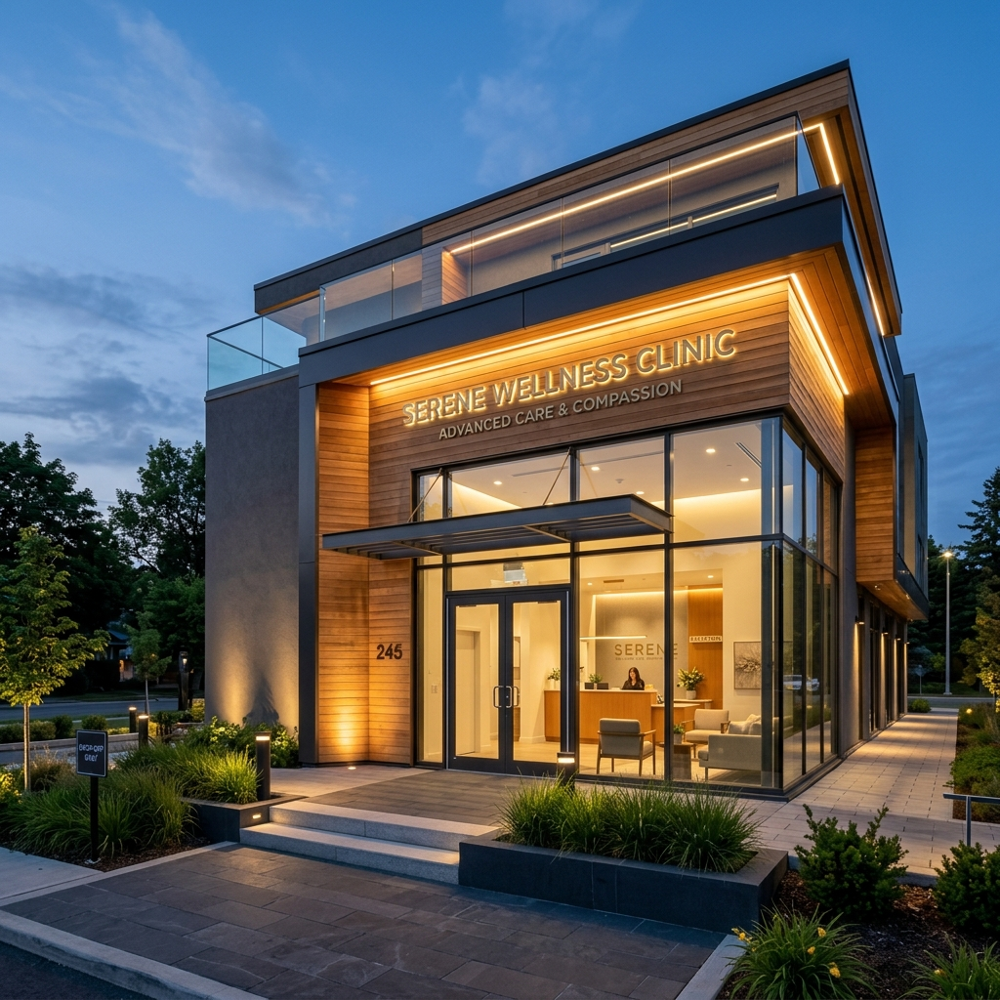
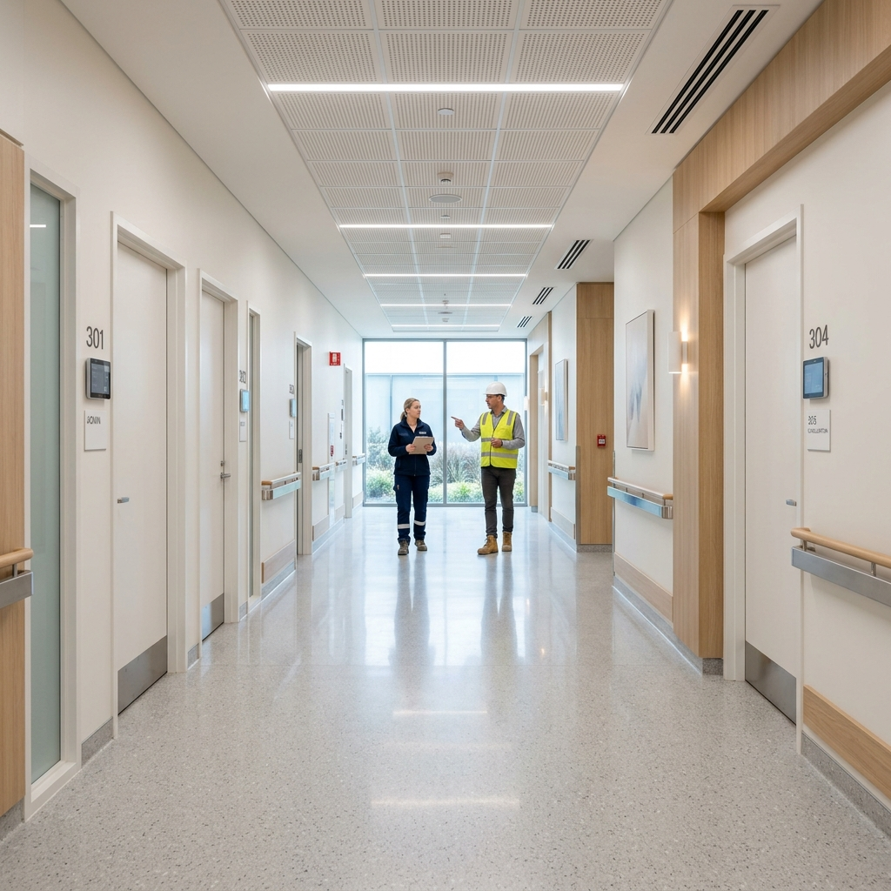

맞춤형 동선 기획
칼럼 #1
성공적인 메디컬 개원을 위한 진료과목별 맞춤 동선 설계 기획
내과, 치과, 이비인후과 등 각 진료과목의 특성에 맞춘 환자 및 의료진 동선 기획은 병원 운영의 효율성과 직결됩니다. 환자의 심리적 부담을 덜고 직원의 이동을 최소화하는 비법을 공개합니다.
성공적인 개원과 리모델링을 위해 국가 공인 실내건축공사업 면허 보유 전문가가 집필한 핵심 지침 모음입니다.

내과, 치과, 이비인후과 등 각 진료과목의 특성에 맞춘 환자 및 의료진 동선 기획은 병원 운영의 효율성과 직결됩니다. 환자의 심리적 부담을 덜고 직원의 이동을 최소화하는 비법을 공개합니다.

병원 인테리어에서 가장 까다로운 소방, 공조 및 방사선 차폐 설비의 기준을 명확히 제시하고 시공 시 주의해야 할 점을 알아봅니다.

단순한 대기 공간을 넘어, 고급스러운 호텔식 라운지 감성을 더해 환자의 불안감을 해소하고 병원의 브랜드 가치를 높이는 인테리어 기법입니다.

치열해지는 개원가 속에서 독보적인 경쟁력을 확보하기 위해서는 시각적인 정체성을 확립하는 것이 필수적입니다. 병원의 외관인 전면 파사드 디자인 노하우를 공유합니다.
병원 인테리어는 소방, 방사선 차폐 등 고난도 공정이 요구됩니다. 안전한 개원을 위해 정부 공인 실내건축공사업 면허 확인이 왜 필수인지 짚어봅니다.

아무리 뛰어난 3D 도면이 있어도 현장 감리가 부실하면 무용지물입니다. 체계적인 밀착 감리와 하자이행보증증권 기반의 A/S 시스템을 알아봅니다.
바닥 난방 환경에서 에폭시 본드 사용 시 발생하는 타일 들뜸 하자의 원인과 국제 표준 C2TES1 탄성 접착제의 열변형 완충 메커니즘을 상세히 분석합니다.
문틀과 벽면이 일체화되는 히든도어 시공 시 문틀 하지면을 MDF 로만 시공할 경우 장기적으로 문 처짐이 발생할 확률이 매우 높아지며, 경첩 고정부에는 12T 이상...
천장 몰딩을 없애는 무몰딩 도배 시공 시 이음새만 메우는 줄퍼티 방식으로 마감할 경우 측면 조명이나 자연광 아래에서 석고보드 단차가 도드라져 보일 확률이 높아지며...
거실 매립 조명 설계 시 3인치 다운라이트 를 전면 확산형으로만 배치할 경우 공간 전체의 조도 는 확보되나 명암 대비가 사라져 밋밋해 보이기 쉬우며, 반대로 집중...
대형 아일랜드 주방에 12T 두께의 세라믹 또는 엔지니어드스톤(칸스톤) 상판을 시공할 때 하부 하부장 위에 별도의 보강 프레임 없이 거치할 경우 개구부 주변 균열...
욕실 리모델링 시 시멘트 액체방수 만으로 바닥 방수를 마감할 경우 건물의 미세 거동이나 건조 수축으로 인한 균열 발생 시 누수*로 이어질 확률이 높아지며, 모서리...
창호 교체 시 복층유리에 로이유리 를 적용할 때 은(Ag) 코팅막의 위치를 실외측 2번면에 두는지 실내측 3번면에 두는지에 따라 냉난방 에너지 효율 특성이 달라지...
강마루 및 원목마루 시공 전 기존 바닥 미장면의 평활도 편차가 허용 기준을 초과할 경우 보행 시 꿀렁거림과 마루 이음매 벌어짐이 발생할 확률이 높아지며, 균일한 ...
주방 리모델링 시 고풍량 렌지후드를 설치하더라도 기존 아파트의 100mm 주름관 배관을 그대로 연장하거나 90도 이상의 직각 굴절이 다수 발생할 경우 정압 손실로...
인테리어는 감각과 포트폴리오만 보고 업체를 고르기 쉽지만, 면허 유무는 공사 도중 문제가 생겼을 때 내 돈을 지킬 수 있는지 판가름하는 기준이 됩니다.
인테리어 사기 및 공사 중단 피해 사례의 대부분은 공사가 시작되기도 전에 공사 대금의 상당 부분을 미리 건네주면서 발생합니다.
"건물 관리사무소에 인테리어 공사 신고만 하고 비내력벽을 철거하거나 발코니를 확장해도 되겠지?"라고 생각하면 개원 인허가 반려 등 큰 낭패를 볼 수 있습니다.
상가, 학원, 음식점, 병의원 등 다중이용시설 인테리어 공사는 주거 공간과 달리 엄격한 소방법 기준을 충족해야 합니다.
인테리어 완공 후 타일 들뜸, 마루 변색, 문틀 뒤틀림 등 하자가 발생했을 때 시공업체가 'AS 기간 3개월이 끝났다'며 책임을 회피하는 사례가...
인테리어 공사 계약 시 견적서에 상세 수량과 단가 없이 '욕실 공사 1식 600만 원'과 같이 뭉텅이로 기재된 내역서를 그대로 승인했다가 추가금...
인테리어 공사를 마친 직후 욕실이나 베란다 배수 부실로 아랫집 천장에 누수가 발생하면 수백만 원에서 수천만 원에 달하는 누수 피해 배상 분쟁으로 번지게 됩니다.
인테리어 공사를 계획할 때 업체의 외형이나 단순 현장미팅만으로만 판단하고 섣불리 계약을 맺는 경우가 많습니다.
인테리어 공사를 계획할 때 업체의 외형이나 화려한 포트폴리오만 보고 섣불리 계약을 맺는 경우가 많습니다.
인테리어 리모델링 공사 시 관계 법령과 기술 규격에 부합하지 않는 임의 시공이 진행될 경우 입주 후 안전사고 및 하자 분쟁의 원인이 됩니다.
거실 바닥재 리모델링 시 보행감과 내구성, 열전도율에 따라 마루 자재의 물리적 특성이 상이하므로 한국산업표준 기준에 부합하는 자재를 선택해야 합니다.
병원·의원 인테리어 리모델링 공사 시 관계 법령과 기술 규격에 부합하지 않는 임의 환기 설비 시공은 개원 후 진료실 공기질 악화, 결로 누수 및 하자 분쟁의 원인이 됩니다.
인테리어 리모델링 공사 시 관계 법령과 기술 규격에 부합하지 않는 임의 시공이 진행될 경우 입주 후 안전사고 및 하자 분쟁의 원인이 됩니다.
인테리어 리모델링 공사 시 관계 법령과 기술 규격에 부합하지 않는 임의 시공이 진행될 경우 입주 후 안전사고 및 하자 분쟁의 원인이 됩니다.
아파트, 주거, 상업 등 실내 인테리어 리모델링 공사 전 가장 기본적이면서도 중요한 절차는 계약을 체결하려는 시공사가 법정 자격을 갖춘 적법한 건설사업자인지 검증...
상가 건물에 입점하는 병원·의원 인테리어 시 우수관(빗물 배관) 커버 교체와 악취 역류 방지 트랩, 하부 실란트 방수 밀폐 시공의 실무 감리 기준을 안내합니다.
실내 인테리어 공사 계약 체결 시 시공사의 과도한 선금 요구나 불합리한 공사대금 청구로 인한 공사 중단, 야반도주, 부실시공 피해를 예방하기 위해서는 공정거래위원...
실내 인테리어 리모델링 공사 중 관계 법령과 표준 기술 규격에 미달하는 임의 시공이 이뤄질 경우, 준공 직후에는 외관상 드러나지 않더라도 거주 기간 동안 심각한 ...
고층 메디컬 빌딩 내 병원·의원 창호 공사 시 강풍 및 태풍에 대비한 단열창호 내풍압성 시험성적서(KS F 3117)와 다점 로킹 기어 잠금장치 감리 기준 안내.
건축 마감 및 설비 공사는 사용 자재의 물리적 성능과 결속 방식이 설계 시방과 일치할 때 비로소 장기적인 내구성이 완성됩니다.
아파트 및 주택 리모델링은 단순한 실내 미관 개선에 그치지 않고 건축 관계 법률과 기술 안전 규정을 엄격히 따라야 하는 전문 공정입니다.
공정거래위원회 표준계약서 기준, 가장 안전한 인테리어 게약금 비율은 총 공사금액의 10% 이내 입니다.
인테리어 리모델링 공사 시 관계 법령과 기술 규격에 부합하지 않는 임의 시공이 진행될 경우 입주 후 안전사고 및 하자 분쟁의 원인이 됩니다.
아파트 및 주택 리모델링은 실내 미관 개선에 그치지 않고 건축 관계 법률과 기술 안전 규정을 엄격히 따라야 하는 전문 공정입니다.
천장형 시스템 에어컨은 일반 가전제품에 비해 순간 소비전력과 기동전류가 높아 화재 예방을 위해 독립 배선과 규격 전선을 시공해야 합니다.
발코니 확장 공사 시 외벽 접합 부위에 단열 결손이 생기면 겨울철 실내외 온도 차로 인해 단열재 내부와 모서리에 심각한 결로 곰팡이가 발생합니다.
성공적인 주거공간 리모델링을 위해서는 작업자의 단순 경험이나 관행적 시공에 의존하지 않고, 공인된 기술 시방서에 따른 단계별 감리 검수가 선행되어야 합니다.
실내 건축 환경의 안전과 직결되는 공정일수록 비공인 자재를 적용하거나 규격 시공 절차를 누락하면 입주 후 예기치 못한 안전사고로 직결될 수 있습니다.
성공적인 주거공간 리모델링을 위해서는 작업자의 단순 경험이나 관행적 시공에 의존하지 않고, 공인된 기술 시방서에 따른 단계별 감리 검수가 선행되어야 합니다.
병원·의원 확장 및 구조변경 공사를 관할 구청의 '행위허가'나 '대수선 허가' 없이 무단으로 진행하면, 건축법 위반으로 이행강제금 및 강제 원상복구 명령이 부과될 뿐만 아니라 보건소 의료기관 개설 필증 교부가 불가능해집니다.
실내 인테리어 리모델링 공사 중 관계 법령과 표준 기술 규격에 미달하는 임의 시공이 이뤄질 경우, 준공 직후에는 외관상 드러나지 않더라도 거주 기간 동안 심각한 ...
욕실 인테리어 방수 공사 후 누수 확인은 며칠 동안 물을 받아둬야 할까?
부산 병원 인테리어 업체 선정 시 필수 면허 확인법부터 진료과목별 평균 시공 기간, 렌트프리 협상 팁, 최신 호텔식 라운지 트렌드까지 핵심 실무 지침을 전합니다.
부산 병원 인테리어 평당 비용의 진실과 추가비용 예방법, 계약 시 필수 특약과 면허 확인법, 보건소 실사 및 소방 완비 필증 인허가 기준을 상세히 안내합니다.
아파트 및 주택 리모델링은 단순한 실내 미관 개선에 그치지 않고 건축 관계 법률과 기술 안전 규정을 엄격히 따라야 하는 전문 공정입니다.
실내 건축 환경의 안전과 직결되는 공정일수록 비공인 자재를 적용하거나 규격 시공 절차를 누락하면 입주 후 예기치 못한 안전사고로 직결될 수 있습니다.
욕실 및 주방 곰팡이 방지 바이오 실리콘과 일반 변성 실리콘의 물성 차이
건축 마감 및 설비 공사는 사용 자재의 물리적 성능과 결속 방식이 설계 시방과 일치할 때 비로소 장기적인 내구성이 완성됩니다.
병원·의원 실내 건축 및 설비 공정 시 상가 관리단 및 인접 상가 공사 동의서 기준은 비내력벽 철거 같은 구조 변경이 포함되면 상가 건물 관리단 규약 및 인접 점...
성공적인 병원·의원 인테리어 및 시설 설비 공사를 위해서는 작업자의 단순 경험이나 관행적 시공에 의존하지 않고, 공인된 기술 시방서에 따른 단계별 감리 검수가 선...
공사 완료 후 빈번하게 발생하는 법률적 하자담보 분쟁 및 구상권 청구의 상당수는 초기 시공 단계에서 공정별 필수 기술 규격을 계약 내역서에 명문화하지 않고 작업을...
인테리어 견적서에 '1식'으로만 적혀 있으면 왜 위험할까?
인테리어 완공 후 누수나 타일 들뜸 같은 중대 하자가 발생했음에도 시공사가 연락을 피하거나 보수를 거부한다면, 전화로만 다투지 마시고 즉시 하자 부위 사진·영상 ...
건축 마감 및 설비 공사는 사용 자재의 물리적 성능과 결속 방식이 설계 시방과 일치할 때 안정적으로 장기적인 구조적 장기 내구성이 확보될 수 있습니다.
실내 실내 건축 및 설비 공정의 층간소음 허용 시간은 대부분의 실내 공간 단지 관리규약상 평일 오전 9시부터 오후 5시(또는 6시)까지로 제한되며, 토요일, 일요...
개원 부지 선정부터 도면 기획, 특수 공조 설비, 보건소 소방 인허가까지 완벽하게 지원해 드립니다.